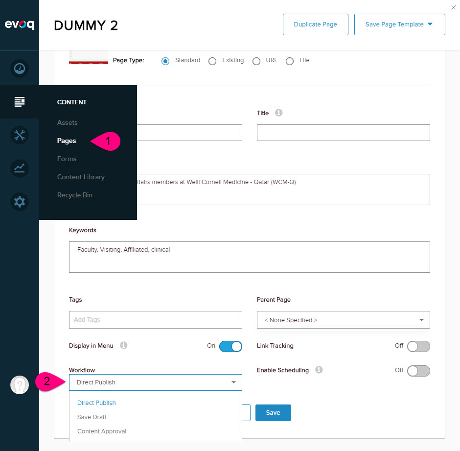

Dnn/Evoq Page Versioning / Publishing and Workflow
This page explains how a Dnn / Evoq does page versioning and workflow, and how to leverage this with 2sxc.
Background: Dnn / Evoq Page/Module Versioning
Dnn / Evoq had a few different ways of doing versioning, but since Dnn 7.4.2 it basically uses a model which works as follows:
Each page has a live version number (for this demo we'll say version P27 - for page 27). On this page, various modules exist, each having their own version number. Let's say we have a gallery-module which is currently on version 6 (MG6) and a module with a form in version 12 (MF12). So the page information currently has:
- P27 live
- Module 1: MG6 live
- Module 2: MF12 live
Basic Example with Adding Module
If a new module with a form is added in between, Dnn will do the following
- P28 draft (P27 is still live)
- Mod 1: MG6 live (same version on live and draft)
- Mod 2: MF1 new, regarded as draft
- Mod 3: MF13 draft (the position has changed, so the module info has changed)
As further changes to modules additions / removals / reordering happen, this happens on the P28 version only. So even if we delete or rename a module, the live version will not show this.
So Dnn mechanims incl. moving/renaming of modules is a Dnn/Evoq responsiblity, and is versioned by Dnn/Evoq. We'll talk about the internal content of a module further down.
Publishing a Page
Basically when an editor publishes a page, Dnn will do the following:
- set P28 to the published page
- tell each module to publish in that version (in case the module support inner versioning - read on...)
Dnn / Evoq Workflows
Because these topics are almost undocumented - and exist in different implementations, they are confusing. You need to know the following about workflows:
- Workflows apply to the page only, so pages need to know if they have a workflow and which one
- Modules don't know about these workflows...
- ...because Modules only get notified when the workflow reaches a "publish" state
Background: Module Inside/Inner Versioning
Modules have their own content which may or may not be versioned. 99% of all modules don't version their content and have no history. And 99.9% don't support Dnn/Evoq page versions & publishing.
So IF a module doesn't know about these mechanisms, then changes inside that module will not be versioned and they will be live immediately as they are applied. But let's assume our modules do support this, and let's say the gallery with module-info in V6 (it was moved a few times, so it has 6 versions) still has the initial V1 content, which we'll call MGi1 (Module Gallery inside V1).
Module Version Tree with Inner Version
So let's look at the versioning tree as it really is
- P27 live
- Mod 1: MG6 live with MGi1
- Mod 2: MF12 live with MFi26 (had made configuration changes, each versioned)
Now let's simulate a change...
Inner Content Changes
Let's say the editor makes a small change to the Form-module. This will notify Dnn of a change. As this happens, it must tell Dnn that it has a new version - like this, so Dnn will also place the page in a new version (for later publishing):
- P28 draft
- Mod 1: MG6 live with MGi1 live
- Mod 2: MF12 live with MFi27 draft
Note that if the form module makes more changes, it can choose to report this or not, since basically the newest version is a draft already, on a draft-page.
Inner Content Publishing
Now once the user decides to publish this page, each module (incl. the Forms-Module) will be notified to publish it's version. Dnn will tell the form which version it should publish (in this case v27). The form must take care of whatever processing to ensure that this version is now live / public.
2sxc Support for Dnn / Evoq Publishing
2sxc support the core parts of Dnn/Evoq Publishing and versioning. To be more specific, it will
- detect if the page requires a publishing workflow
- tell Dnn/Evoq that on-page content was edited
- modify the GUI to only allow draft/publish options as it corresponds with the page information
- listen to Dnn/Evoq messages to publish on-page information
This sounds simple, but it's very complex because 2sxc can be used in many scenarios, and in some it's not always clear when to draft or publish something. So there are some exceptions, which are documented below.
Activating Page Publishing Feature on 2sxc
You don't have to do anything - 2sxc asks the environment (Dnn/Evoq) it it expects any publishing steps, and will automatically adjust its behavoir.
Making Changes Start a Dnn-Page Versioning
This too happens automatically, if the page has a publishing setup in Dnn/Evoq.
Auto-Draft and Auto-Publish explained
To be sure you understand what's going on, please note the following:
Only changes which directly relate to a page cause auto-draft / auto-publish
Example 1: A user changes a blog post on a blog-page. The page will get a new draft version and the live blog will show the old one, while the draft will show the new one. When the page is published, the draft will become live.
Changes to content-items which are not directly tied to a page, will not cause drafting / publishing
Example 2: When the user edits the blog post he also creates another category (which is used as data and not as on-page content). This category is immediately live, but will probably not show up as it's only used in the edited blog-post.
Example 3: An admin-user goes into the admin UI and creates a blog post from within the admin-UI. It will not auto-default to draft, as this is not specific to any page. But if the user manually sets it to draft, it will be published when a page showing it is released.
Restoring Previous Versions
Dnn / Evoq has a mechanism for restoring previous page versions, and when implemented perfectly, all modules inside it could also revert back to the state it was in at that time. Such a perfect world is hard to implement and nearly impossible in a dynamic-content setup. For example, apps may have been deleted or content-types (schemas) may have changed. So the idea sounds good, but is impossible to implement correctly.
So 2sxc goes the pragmatic way: You can restore any item to a previous version - so you can always roll back a blog-post to a previous copy, but putting the page back into an old version will not roll back anything inside a 2sxc-module.
To Restore previous versions of content-items, use the history (clock) icon in the toolbar.
Technical Deep Dive - Behind the Scenes
In case you run into trouble or need to know more about the mechanisms, here's what you need to know
What is an On-Page Change and What is Not
By definition, any item created or modified directly from a toolbar button in the front end is regarded as an On-Page change and will start the page-draft process. This is basically all the buttons which normal (non-admin) users see. If you haven't heard of hiding admin-buttons, please read the concept on hiding advanced features.
Specifically, this includes the following actions:
- editing content directly from a toolbar button
- adding new content to the page from a toolbar button
- moving items up/down in a content-item list using a toolbar button
- replacing an item on a page using the toolbar button
The following actions are not regarded as on-page changes, and don't auto-force drafting:
- editing any data from the Admin-UI
- editing app-resources or app-settings
- creating / modifying views
- importing data / importing apps
What is Published on Page-Publish and What Not
When a page is published, Dnn/Evoq will tell each module that it should now publish that specific version assigned to that page version. When this happens, 2sxc does the following:
- Retrieves the (usually invisible/secret) content-group entity which contains the information, what template and what items are shown on this module. This one is probably stored as a draft from previous changes, as this one keeps track of the items to show and the order to show them in. This draft is then published.
- Reviews all items on the four primary in-streams, checks each entity and publishes draft versions. The streams it will process are:
- Default (this is the one provided on Content)
- Presentation
- ListContent (the header-content item)
- ListPresentation (the header presentation item)
Note that other streams are not auto-published. This is to prevent side-effects. For example, a Blog-View could have additional streams to visualize authors, categories etc. but these will not be auto-published, as it is assumed that these are helper-data and not specifically on-page data for this page.
Publishing Additional Items
If you want to auto-publish additional items, just add them to a stream PartOfPage.
Inner Content Handling (Very Rich Content)
Inner Content is not currently treated as belonging to the page, as it is inside content which is already drafted/published. So inner-content is always published when created.
Note that this is not fully tested/implemented, you may have unexpected consequences when working with inner content.
Image And Asset Handling
Images and assets are not versioned / published, as Dnn provides no effective way to enable this. So as of now, the following will happen:
- if a content-type has a file-field using ADAM with a single file (not library), then draging in an additional file will behave like the publishing, because the new file has a new number, and this is not in use till the item is published
- if the user drags in an updated file with the same name, it will internally receive a number at the end, and also stay unpublished, as it's a different file on the server
- if a user manually replaces a file (not drag-drop in ADAM) or deletes a file and then uploads the file with the same name, then this file is live, as it really changed the file on the server
- if you are using a library-field in ADAM (often used in galleries), then these files are automatically live as well, and deleted files are also removed immediately
In case you are using an ADAM library and would like to only show the files which existed before you created an unpublished draft, this can be done in your template. Just remember that certain changes (like file-changes on the server) could change the modified date, and that deleting files also really removes live files as well. Here's how you can change your Razor:
@* before, showing all files *@
@foreach(var pic in AsAdam(Content, "Files").Files) {
<span>@pic.FileName, @pic.LastModificationTime</span><br>
}
@* only showing "older" files *@
@foreach(var pic in ((IEnumerable<ToSic.SexyContent.Adam.AdamFile>)AsAdam(Content, "Files").Files).Where(f => f.LastModificationTime <= Content.Modified)) {
<span>@pic.FileName, @pic.LastModificationTime</span><br>
}
Notes and Clarifications
As mentioned, this is the default setup. In the case of data-oriented apps, which query data from somewhere, you may have other expectations. At the moment there is no additional mechanism to customize this any further, but we believe that you can easily cover all possible scenarios with this setup.
Read also
History
- Introduces in 2sxc 9.5